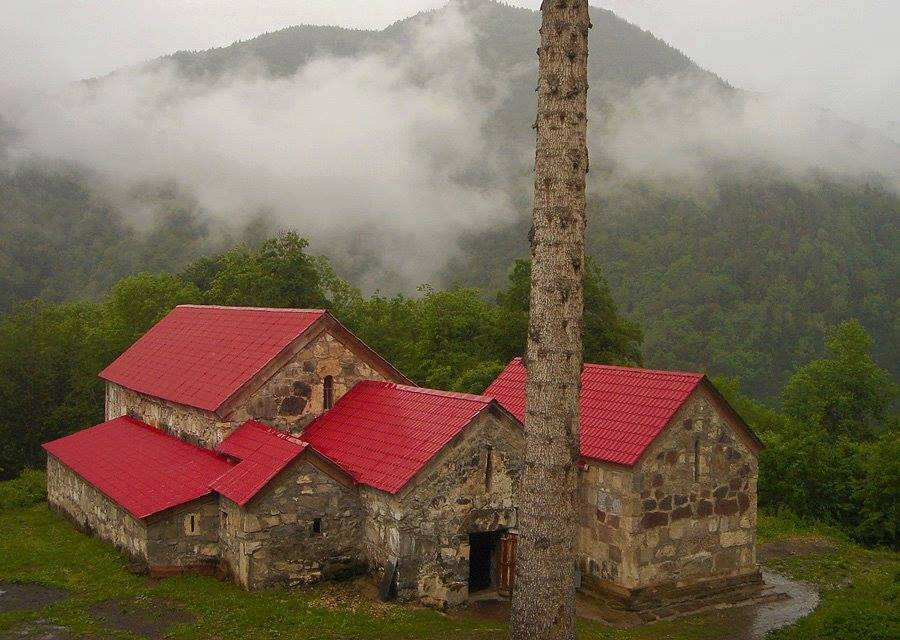
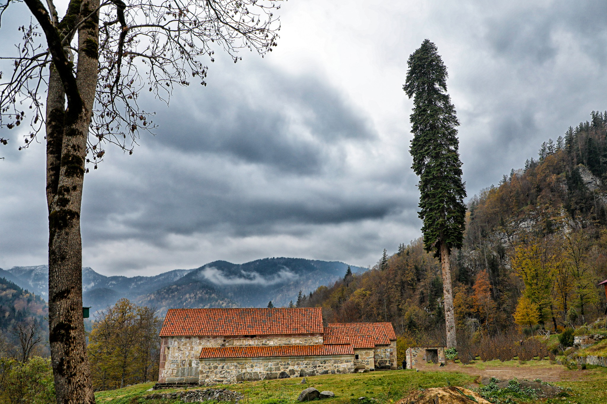
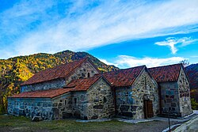
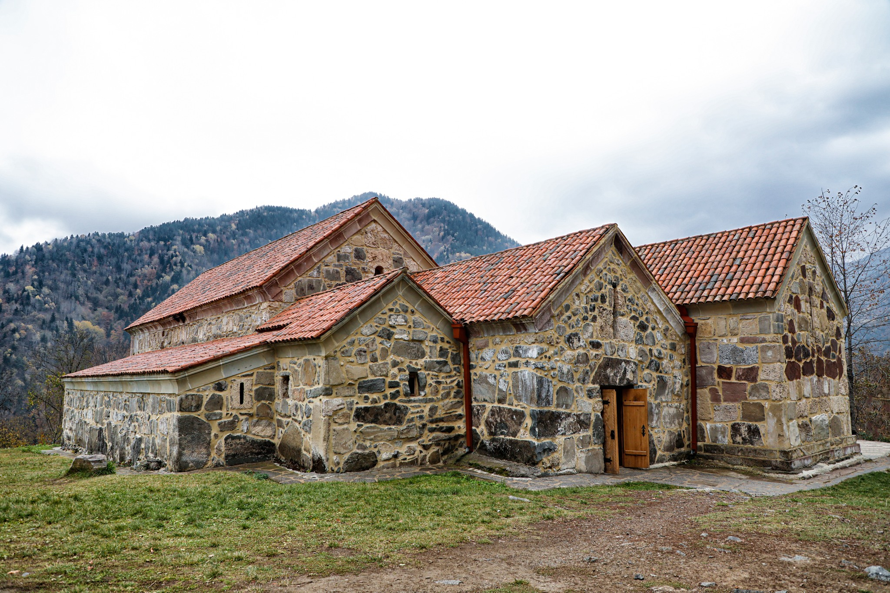
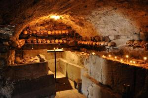
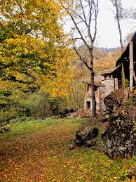

ისტორია და სიმშვიდე
ქოზიფას (გუგომის) სამონასტრო კომპლექსი VII-IX საუკუნეებშია დაარსებული. იგი გამორჩეულია იმით, რომ ერთ პატარა ტერიტორიაზე ხუთი სხვადასხვა ეპოქის ეკლესიაა თავმოყრილი. მონასტერი გარშემორტყმულია ხშირი ტყით და ითვლება ხეობის ერთ-ერთ ყველაზე რთულად მისადგომ, თუმცა განსაკუთრებული ენერგეტიკის მქონე ადგილად.






⚠️ მნიშვნელოვანი ინფორმაცია
🏔️ სიმაღლე
მდებარეობს ზღვის დონიდან 1420 მეტრზე. ტემპერატურა აქ ყოველთვის უფრო დაბალია.
🚙 ტრანსპორტი
საჭიროა მხოლოდ მაღალი გამავლობის (Off-road) ჯიპი. გზა არის მთიანი და ვიწრო.
⛪ ეტიკეტი
მკაცრი სამონასტრო წესები. ქალბატონებისთვის სავალდებულოა გრძელი ქვედაბოლო.
📶 კავშირი
კავშირი შეზღუდულია. იდეალური ადგილია ციფრული დეტოქსისთვის.